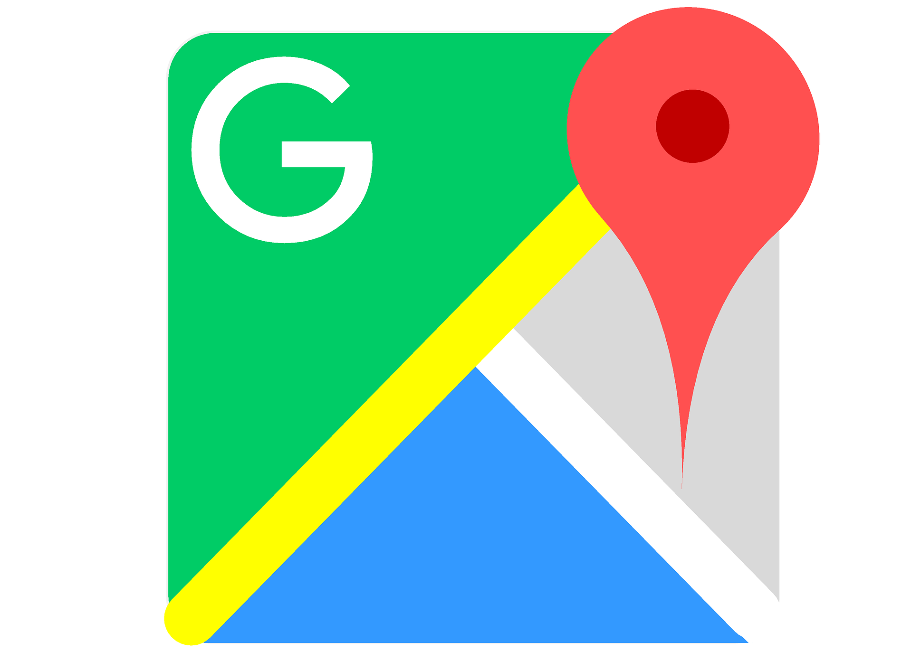

EL RIESGO DE USAR LA GEOLOCALIZACIÓN
La forma en que interactuamos en la red, ha cambiado la perspectiva de privacidad de nuestros datos en internet.
La geolocalización, una tecnología en nuestro móvil. Un vistazo a tener en cuenta sobre los beneficios, pero sobre todos sus riesgos.
El dispositivo móvil y la mayoría de las aplicaciones, entre ellas las redes sociales que disponemos en ella, aprovechan la geolocalización reportando en tiempo real la ubicación de cada usuario.
La información de la ubicación es recolectada y procesada, entrega un historial espeluznante de quienes somos y nuestra rutina diaria. Cuanto más datos de información sea acumulada más precisa será nuestra identidad expuesta.
El mapeo de nuestra vida puede mostrar información con tal detalle de lugares, horas donde frecuentas, con quien te reúnes, tus gustos por lo que compras, las clínicas que visitas, los males que padeces, tus inclinaciones políticas y sexuales, tu vida sentimental, etc. incluso entregar información sumamente sensible a completos extraños.
Proporcionamos datos de manera inconsciente por falta de educación e información, por solo prestar atención a los beneficios que estas entregan o por seguir al resto sin tomar ninguna precaución.
La geolocalización es importante utilizada de manera responsable, las aplicaciones y las redes sociales vienen por defecto activadas, lo recomendable es desactivarlas y solo usarlas para uso particular y contenidos concretos, en lo posible no hacer uso de ella.
Lo primero que debemos hacer es concientizarnos de los peligros y amenazas que esta conllevan para luego consultar y buscar información sobre las medidas de precaución más adecuadas.
Geovanni Gonzales
Sistemas, Apasionado por la tecnología Blockchain y seguridad Informática.